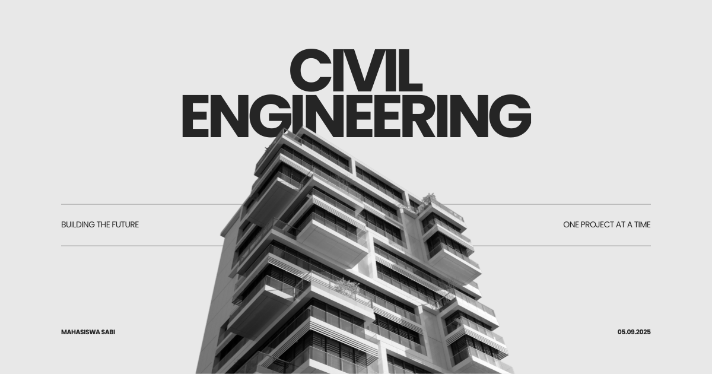

Aturan Pembebanan Infrastruktur Indonesia
Aturan Pembebanan Infrastruktur Indonesia: Dasar Perancangan Infrastruktur yang Aman, Andal, dan Sesuai Standar Nasional
Setiap infrastruktur yang dibangun di Indonesia harus mampu menahan berbagai jenis beban selama masa layanannya. Gedung, jembatan, jalan raya, bendungan, pelabuhan, bandar udara, hingga menara telekomunikasi akan menerima beban yang berasal dari berat sendiri struktur, aktivitas manusia, kendaraan, angin, gempa bumi, tekanan tanah, tekanan air, maupun pengaruh lingkungan lainnya. Oleh karena itu, perencanaan struktur tidak dapat dilakukan hanya berdasarkan pengalaman, tetapi harus mengikuti aturan pembebanan yang telah ditetapkan melalui Standar Nasional Indonesia (SNI) dan berbagai regulasi teknis agar infrastruktur memenuhi persyaratan keselamatan, keandalan, dan ketahanan terhadap berbagai kondisi pembebanan. }
Dalam program studi Teknik Sipil, mata kuliah Aturan Pembebanan Infrastruktur Indonesia membekali mahasiswa dengan pemahaman mengenai prinsip-prinsip pembebanan struktur sesuai standar nasional yang berlaku di Indonesia. Mahasiswa mempelajari karakteristik berbagai jenis beban, kombinasi pembebanan, faktor keamanan, serta penerapan berbagai SNI yang digunakan dalam perancangan bangunan gedung, jembatan, maupun infrastruktur lainnya sehingga mampu menghasilkan desain yang aman, efisien, dan sesuai regulasi. }
Apa Itu Aturan Pembebanan Infrastruktur Indonesia?
Aturan Pembebanan Infrastruktur Indonesia merupakan mata kuliah yang mempelajari berbagai standar, pedoman, dan regulasi mengenai penentuan beban yang harus diperhitungkan dalam proses analisis dan perancangan infrastruktur. Mata kuliah ini mengintegrasikan ilmu mekanika teknik, analisis struktur, rekayasa gempa, geoteknik, serta ketentuan dalam Standar Nasional Indonesia (SNI) agar setiap struktur memiliki tingkat keselamatan yang memadai.
Mahasiswa mempelajari bagaimana mengidentifikasi jenis beban, menentukan besar beban rencana, menyusun kombinasi pembebanan, menerapkan faktor beban, serta memahami filosofi desain berbasis batas kekuatan (strength design) maupun batas layan (serviceability). Selain itu, mahasiswa dikenalkan pada berbagai standar seperti SNI pembebanan bangunan gedung, SNI pembebanan jembatan, standar ketahanan gempa, serta regulasi teknis lain yang menjadi acuan dalam praktik rekayasa sipil di Indonesia. }
Ruang Lingkup Aturan Pembebanan Infrastruktur Indonesia
Mata kuliah ini mencakup berbagai konsep dan regulasi yang digunakan dalam analisis pembebanan berbagai jenis infrastruktur.
- Konsep dasar pembebanan dalam rekayasa struktur.
- Jenis-jenis beban seperti beban mati, beban hidup, beban angin, beban gempa, beban air, tekanan tanah, serta beban temperatur.
- Kombinasi pembebanan dan faktor keamanan struktur.
- Penerapan Standar Nasional Indonesia (SNI) dalam perancangan bangunan gedung.
- Aturan pembebanan untuk jembatan, jalan, dan infrastruktur transportasi.
- Analisis pembebanan pada bendungan, pelabuhan, bangunan air, dan struktur khusus.
- Hubungan antara pembebanan dengan desain beton, baja, kayu, dan fondasi.
- Konsep desain berbasis batas ultimit dan batas layan.
- Evaluasi pengaruh beban dinamis akibat gempa, angin, kendaraan, dan getaran.
- Penerapan regulasi nasional serta harmonisasi dengan standar internasional.
- Studi kasus penerapan aturan pembebanan pada proyek infrastruktur di Indonesia.
Ruang lingkup tersebut memberikan pemahaman kepada mahasiswa bahwa keberhasilan suatu desain struktur sangat bergantung pada ketepatan dalam menentukan jenis, besar, dan kombinasi pembebanan sesuai standar yang berlaku sehingga risiko kegagalan struktur dapat diminimalkan.
Peran dalam Studi Teknik Sipil
Dalam studi Teknik Sipil, mata kuliah Aturan Pembebanan Infrastruktur Indonesia berperan sebagai dasar bagi berbagai mata kuliah perancangan struktur, seperti Struktur Beton, Struktur Baja, Rekayasa Gempa, Jembatan, Bangunan Air, maupun Analisis Struktur. Mahasiswa memahami bahwa seluruh proses desain harus dimulai dari penentuan pembebanan yang benar sebelum dilakukan analisis maupun perhitungan dimensi struktur.
Pemahaman mengenai aturan pembebanan juga menjadi kompetensi penting bagi calon insinyur sipil agar mampu menghasilkan desain yang memenuhi persyaratan keselamatan publik, ketahanan terhadap bencana, efisiensi penggunaan material, serta kepatuhan terhadap regulasi nasional yang berlaku.
Manfaat dalam Masyarakat, Riset, dan Dunia Kerja
Penguasaan mata kuliah Aturan Pembebanan Infrastruktur Indonesia memberikan manfaat yang luas karena menjadi dasar dalam seluruh proses analisis dan desain infrastruktur.
- Menjamin keselamatan dan keandalan berbagai jenis bangunan serta infrastruktur.
- Mendukung perancangan struktur yang memenuhi standar nasional Indonesia.
- Mengurangi risiko kegagalan struktur akibat kesalahan dalam analisis pembebanan.
- Meningkatkan efisiensi desain melalui penerapan kombinasi beban yang tepat.
- Mendukung pembangunan infrastruktur yang tahan terhadap gempa, angin, dan beban lingkungan lainnya.
- Membantu proses evaluasi, audit teknis, serta rehabilitasi bangunan eksisting.
- Menjadi dasar penelitian mengenai pembebanan ekstrem, ketahanan struktur, pembaruan standar desain, serta analisis risiko infrastruktur.
Lulusan yang menguasai mata kuliah ini memiliki kompetensi yang dibutuhkan sebagai structural engineer, bridge engineer, earthquake engineer, design engineer, infrastructure consultant, building inspector, project engineer, quality assurance engineer, engineering reviewer, maupun peneliti di bidang rekayasa struktur dan standardisasi teknik sipil.
Tren Terkini dalam Aturan Pembebanan Infrastruktur Indonesia
Perkembangan teknologi, meningkatnya kebutuhan akan infrastruktur yang tangguh, serta perubahan kondisi lingkungan mendorong pembaruan standar pembebanan secara berkelanjutan. Selain mengikuti perkembangan ilmu rekayasa internasional, Indonesia juga terus memperbarui standar nasional agar sesuai dengan karakteristik geografis dan tingkat risiko bencana di dalam negeri. }
- Pembaruan Standar Nasional Indonesia (SNI) mengikuti perkembangan teknologi dan hasil penelitian terbaru.
- Peningkatan analisis pembebanan berbasis kinerja (Performance-Based Design).
- Integrasi Building Information Modeling (BIM) dengan analisis pembebanan struktur.
- Pemanfaatan Artificial Intelligence (AI) untuk optimasi desain dan evaluasi kombinasi pembebanan.
- Penggunaan Digital Twin untuk memantau respons struktur terhadap beban secara real-time.
- Penerapan Internet of Things (IoT) dan Structural Health Monitoring (SHM) untuk validasi asumsi pembebanan.
- Analisis ketahanan infrastruktur terhadap perubahan iklim, cuaca ekstrem, dan kenaikan muka air laut.
- Pengembangan pendekatan berbasis risiko (risk-based engineering) dalam penentuan pembebanan.
- Harmonisasi standar nasional dengan praktik dan kode desain internasional untuk meningkatkan daya saing industri konstruksi Indonesia.
Penutup
Aturan Pembebanan Infrastruktur Indonesia merupakan mata kuliah yang memberikan pemahaman komprehensif mengenai prinsip-prinsip penentuan beban, kombinasi pembebanan, serta penerapan Standar Nasional Indonesia dalam proses analisis dan perancangan infrastruktur. Melalui pembelajaran mengenai berbagai jenis beban, filosofi desain, dan regulasi teknis, mahasiswa memperoleh dasar ilmiah yang kuat untuk menghasilkan desain struktur yang aman, efisien, dan sesuai dengan ketentuan yang berlaku.
Dalam program studi Teknik Sipil, mata kuliah ini menjadi bekal penting untuk menghasilkan lulusan yang mampu menerapkan standar pembebanan secara tepat, memanfaatkan teknologi analisis modern, serta berkontribusi dalam pembangunan infrastruktur Indonesia yang tangguh, andal, dan berkelanjutan sesuai perkembangan ilmu pengetahuan dan regulasi nasional.
Mahasiswa Sabi
©Repository Muhammad Surya Putra Fadillah